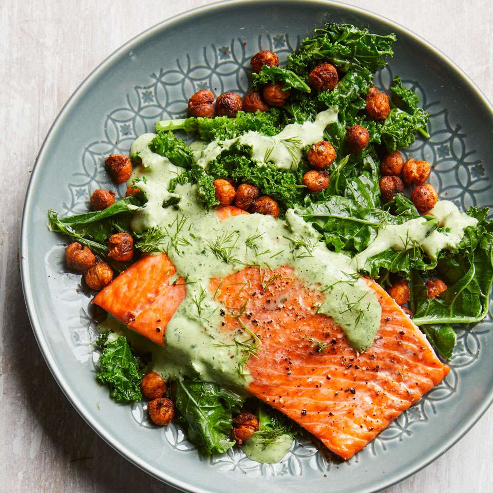

Salmon Recipie

Description
Succulent pan-seared salmon fillets, perfectly cooked to a flaky tenderness, are the star of this elegant yet easy-to-prepare dish. Complemented by a bright lemon-dill sauce and served alongside roasted asparagus, it's a healthy and flavorful meal that's impressive enough for guests but simple enough for any night of the week.
Salmon Dish (Pan-Seared with Lemon-Dill)
- Prepare Salmon: Pat salmon fillets dry, season with salt, pepper, and a touch of garlic powder.
- Sear Salmon: Heat olive oil in a non-stick pan over medium-high heat. Place salmon skin-side down (if applicable) and sear for 4-6 minutes per side, or until cooked through and flaky. Remove from pan.
- Make Sauce: In the same pan, add butter or a bit more olive oil. Deglaze with a splash of white wine or broth, then stir in fresh lemon juice and chopped fresh dill.
- Reduce Sauce: Simmer the sauce for a couple of minutes until slightly thickened.
- Serve: Drizzle the lemon-dill sauce over the cooked salmon. Serve immediately, perhaps with roasted vegetables.
Back Home